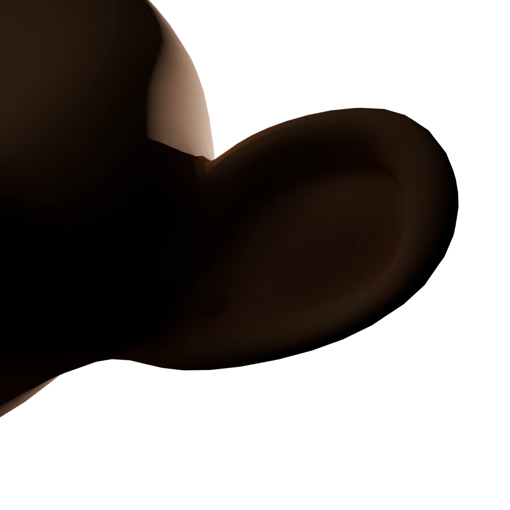

In 1995, Toy Story succeeded partly because its main characters were made of plastic, metal, and glass—materials that early 3D renderers knew how to calculate. But whenever late 90s visual effects tried to create realistic human skin, the result was terrifying.
1. The Physics Problem: Skin Is Not a Mirror
To understand why early CG skin looked dead, you have to look at how computer graphics rendered surfaces throughout the 1980s and 1990s. Early 3D renderers relied almost exclusively on the BRDF (Bidirectional Reflectance Distribution Function).
This model operates under a single assumption: Light hits a surface at point $x$, and immediately reflects off that same point.
While this math works well for hardwoods, polished steel, or painted metals, human skin is not an opaque shell. It is a translucent, multi-layered organ composed of the epidermis, dermis, subcutaneous fat, and blood vessels. When light hits skin, it enters the surface, scatters internally, and exits at a completely different point.
When light hits human skin:
- Roughly 6% is reflected off the surface (specular highlight).
- The remaining 94% penetrates into the skin volume.
- Once inside, the light bounces around millions of times inside tissue, absorbed by hemoglobin and melanin.
- It exits the skin at a different point than where it entered, carrying a warm red hue.

BRDF Model ★ Original Render by Adhirath (Own Work)Standard Surface Reflection
Light cannot penetrate the mesh geometry. Thin cartilage areas (like the ear) appear dark, heavy, and lifeless because backlighting is completely blocked.
Subsurface Scattering (SSS)
Light rays scatter inside the tissue and absorb short wavelengths. Red light bleeds through thin regions, capturing the natural translucency of living skin.
2. The 2001 Breakthrough: Jensen’s Dipole Approximation
Simulating millions of light rays bouncing inside a volumetric tissue structure using full Monte Carlo path tracing was computationally impossible in 2001. A single frame would have taken days to render.
At SIGGRAPH 2001, Henrik Wann Jensen, Steve Marschner, Marc Levoy, and Pat Hanrahan published a landmark paper: "A Practical Model for Subsurface Light Transport."
They introduced the BSSRDF equation to computer graphics:
The Dipole Trick
To make this equation runnable on 2001 render farms, Jensen replaced the complex, brute-force volume simulation with a mathematical shortcut called the Dipole Approximation.
Instead of tracking every internal light scatter, Jensen placed two virtual point sources near the surface—one real light above, and one "virtual image light" beneath. By balancing these two point sources, the algorithm could approximate the exact diffuse radiance exiting skin at any distance from the entry point.
3. The Test Case: Gollum (2002)
While Pixar was experimenting with SSS for milk and skin in short films, Weta Digital integrated Jensen’s BSSRDF model directly into their RenderMan pipeline for The Lord of the Rings: The Two Towers.
The Engineering Constraints on Gollum:
- • Shared full-daylight scenes alongside live-action actors (Elijah Wood, Sean Astin).
- • Thin, sickly skin with visible veins, ribcages, and deep eye sockets.
- • Large, prominent ears frequently backlit directly by the sun.
When Weta applied Jensen's model to Gollum, his character instantly lost his synthetic sheen. When backlit, his ears glowed red due to light scattering through cartilage and blood vessels. The harsh, dark shadows in his facial wrinkles softened into warm skin tones.
4. Evolution: From Dipole to Random Walk
Today’s visual effects pipelines have evolved past the 2001 dipole approximation into fully path-traced volumetric solvers:
| Technique | Era | Mechanism | Trade-off |
|---|---|---|---|
| Dipole Diffusion | 2001–2012 | Virtual light-pair approximation | Fast, but blurs fine detail on sharp noses/ears |
| Screen-Space (SSSS) | 2009–Present | 2D post-process depth blurring | Used in game engines (Unreal). Struggles with backlighting |
| Random Walk SSS | 2017–Present | True volumetric ray-bounce path tracing | Photorealistic, preserves tiny surface details |
The Legacy
Henrik Wann Jensen and his co-authors received an Academy Scientific and Technical Award in 2003. Subsurface scattering proved that photorealism in visual effects isn't about adding more polygon count or higher texture resolution—it is about honoring the physics of how light dies inside matter.